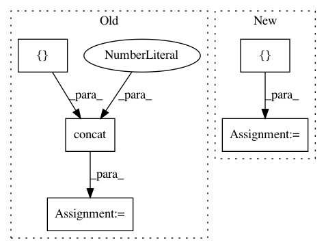

592c161032bfd697ef6f2f334c5cd007062bec4b,rllib/models/tf/recurrent_net.py,LSTMWrapper,forward,#LSTMWrapper#Any#Any#Any#,176
Before Change
// Concat. prev-action/reward if required.
if self.model_config["lstm_use_prev_action_reward"]:
wrapped_out = tf.concat(
[
wrapped_out,
tf.reshape(
tf.cast(input_dict[SampleBatch.PREV_ACTIONS],
tf.float32), [-1, self.action_dim]),
tf.reshape(
tf.cast(input_dict[SampleBatch.PREV_REWARDS],
tf.float32), [-1, 1]),
],
axis=1)
// Then through our LSTM.
input_dict["obs_flat"] = wrapped_out
return super().forward(input_dict, state, seq_lens)
After Change
wrapped_out, _ = self._wrapped_forward(input_dict, [], None)
// Concat. prev-action/reward if required.
prev_a_r = []
if self.model_config["lstm_use_prev_action"]:
prev_a = input_dict[SampleBatch.PREV_ACTIONS]
if isinstance(self.action_space, (Discrete, MultiDiscrete)):
prev_a = one_hot(prev_a, self.action_space)
In pattern: SUPERPATTERN
Frequency: 3
Non-data size: 5
Instances
Project Name: ray-project/ray
Commit Name: 592c161032bfd697ef6f2f334c5cd007062bec4b
Time: 2020-11-25
Author: sven@anyscale.io
File Name: rllib/models/tf/recurrent_net.py
Class Name: LSTMWrapper
Method Name: forward
Project Name: GPflow/GPflow
Commit Name: e100ca38ae807eb1bb5a8e1c5b41b7fe253d4849
Time: 2019-03-25
Author: art.art.v@gmail.com
File Name: gpflow/conditionals/util.py
Class Name:
Method Name: base_conditional
Project Name: dmlc/gluon-cv
Commit Name: ee602b6f68f0bdd19f449a86955697f8f0a2d54c
Time: 2019-09-21
Author: yizhu59@gmail.com
File Name: gluoncv/data/transforms/video.py
Class Name: VideoTenCrop
Method Name: forward